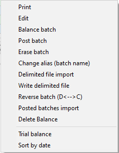

Batch entry selection screen - Context menu
To access the context menu options, right-click on the "Batch type" selection screen for easy access to perform various batch processing tasks in osFinancials. Here is a summary of the available options: 
- Print - Allows you to print a list of transactions in a selected batch (journal) that has not been posted (updated) to the ledger. This provides a printed record of the transactions for reference or auditing purposes. it is recommended to review the batch list and edit or correct any transactions before proceeding to post the batch (journal). This ensures that the transactions are accurate and complete before being updated to the ledger. Printing the list of transactions allows you to have a physical record that can be used for reference, auditing, or reconciliation purposes.
- Edit - Opens the selected Batch entry screen, where you can enter or add new transactions, edit existing transactions, delete or insert transactions, reverse transactions, change the alias (batch name), write transactions to a delimited file, or import transactions from a delimited file. This option gives you flexibility in managing and modifying batch transactions.
- Balance batch - Balances the transactions entered into a selected batch by generating balancing entries (transactions) to ensure that the debits and credits in the batch match. Balancing the batch is crucial for accurate financial records and proper posting to the ledger.
- Post batch - Updates the transactions entered into a selected batch to the ledger, effectively posting them and updating the accounts with the transaction data. This step finalises the batch processing and ensures the transactions are reflected in the financial records.
- Erase batch - Deletes the selected batch (journal) along with all the transactions contained within it. This option is useful when you need to remove an entire batch and its associated transactions from the system.
- Change alias - Allows you to modify the alias (batch name) for a selected batch type. The alias provides a unique identifier for the batch and helps in distinguishing between different batches. You can assign a specific name or use an auto-generated alias based on system date or other criteria.

|
|
Auto-alias - Setting may also be activated on the F10:Setup - Advanced tab - "Options for this batch". This will automatically generate the system date as the alias (batch name) (e.g., “20210331”) for the batch. |

|
|
Auto generated - Alias in Receipts batches - TR00001, TR00002,etc. These aliases prefixed with "TR" (consisting of seven (7) digits) will automatically be generated in receipt batches when the "Receive payment" option is used in Open item link context menu. See - |
- Delimited file import - Imports transactions from a valid delimited file into the selected batch (journal). This feature enables you to efficiently import a large number of transactions from external sources into osFinancials.
- Write delimited file - Writes or exports the transactions entered or imported into a batch to a delimited file. This option allows you to generate a file containing the batch transactions that can be used for various purposes such as data backup or to re-import the transactions a batch or journal at a later stage.
- Reverse batch (D<-->C) - Reverses the amounts of transactions in a selected batch (journal) from the debit column to the credit column or vice versa. This option is helpful when you need to correct or adjust the direction of the transaction entries.
- Posted batches import - Imports transactions from a valid file format if the transactions from a batch (journal) that have already been posted (updated) to the ledger were exported using the "Export - Posted Batches" option. This feature allows you to re-import posted transactions if necessary.
- Delete balance - Deletes the balancing entries (transactions) if the selected batch (journal) is already balanced. This option is useful when you want to remove or modify the balancing entries associated with a batch.
- Trial balance - Generates a trial balance for the unposted transactions entered or imported into batches that have not been posted (updated) to the ledger. You can choose to include unposted transactions, posted transactions, or only posted transactions in the trial balance report. This helps in reviewing the financial impact of unposted transactions.
- Sort by date - Sorts the transactions in the selected batch (journal) in ascending date sequence (from the oldest date to the latest date) if they have not been entered or imported in that order. This option ensures proper sequencing of transactions based on their transaction dates.
|
|
If any invoices and credit notes have been updated to the ledger, these transactions will be included in the batch type report for the sales journal (or other batch (journal)) selected in Setup → Documents setup. |

|
|
If any Purchase documents and Supplier return documents have been updated to the ledger, these transactions will be included in the batch type report for the Purchase journal (or other batch (journal)) selected in Setup → Documents setup. |